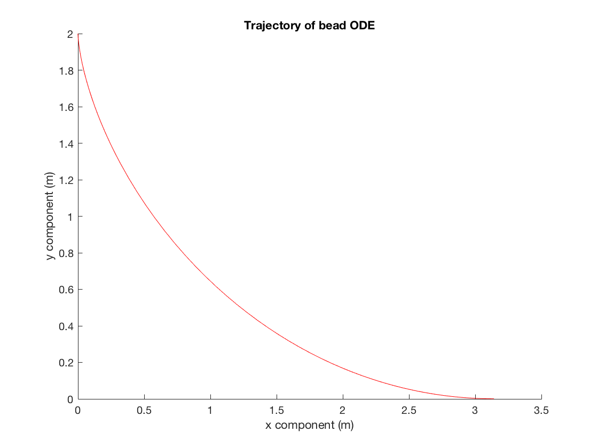
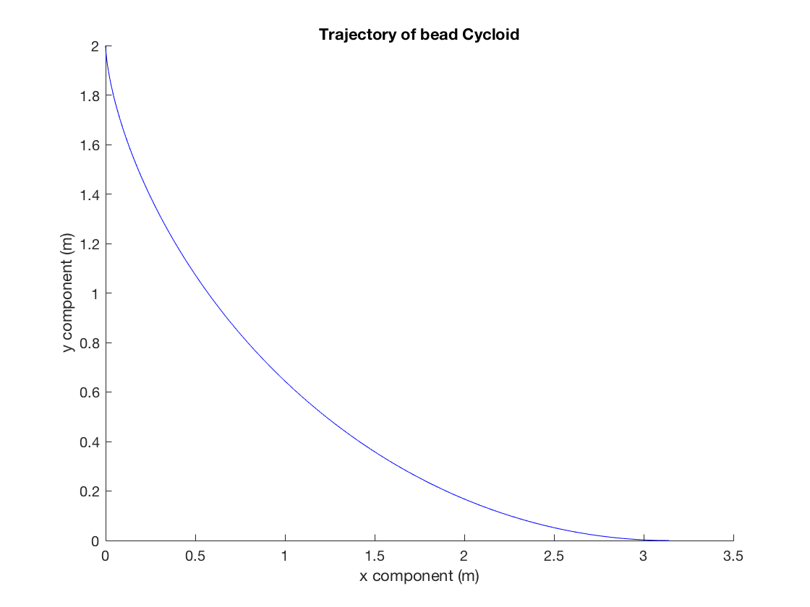
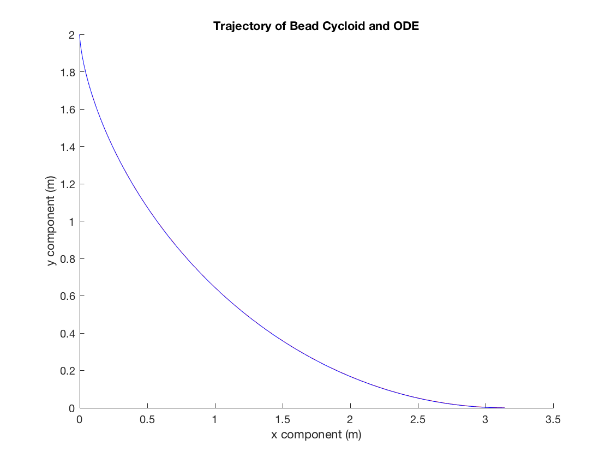
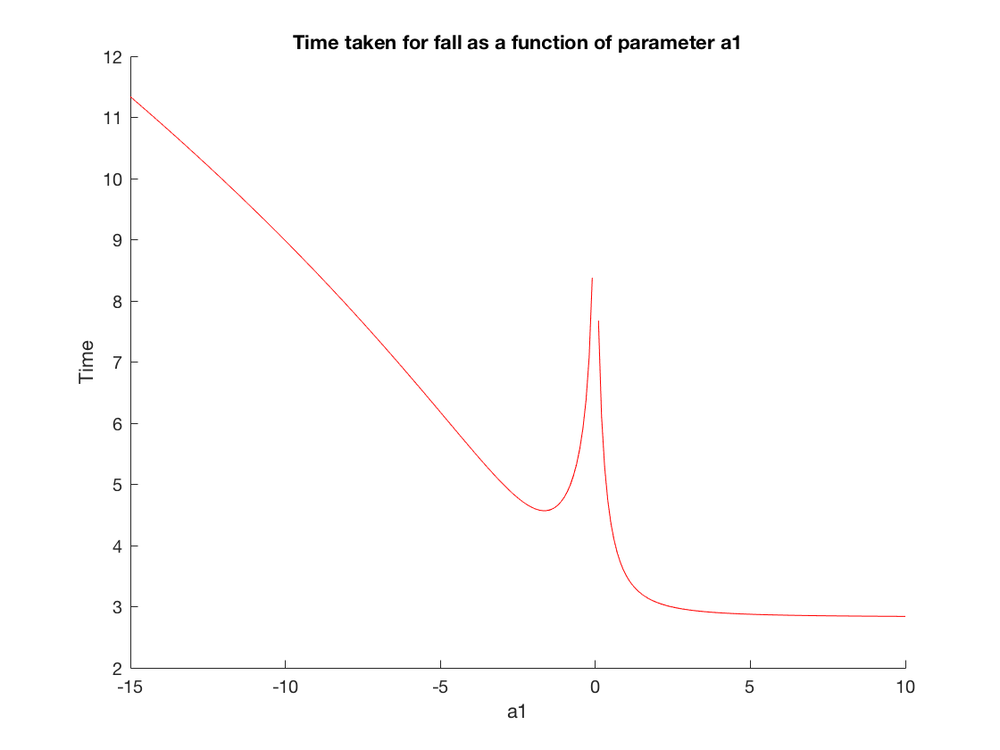
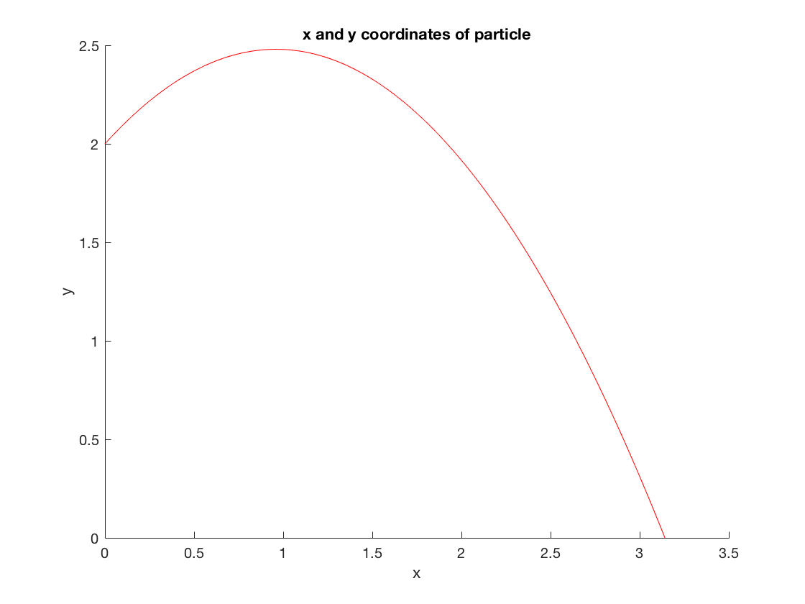
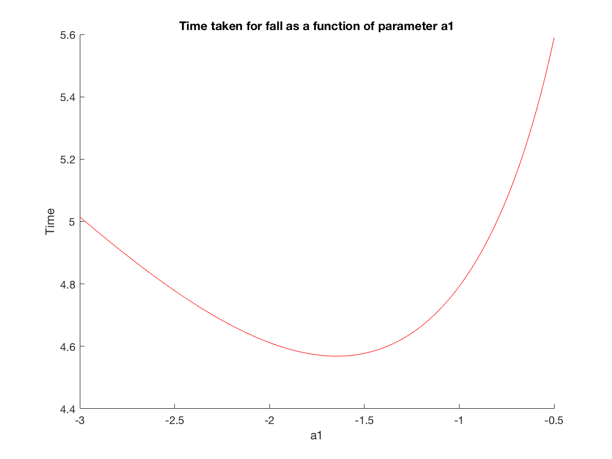
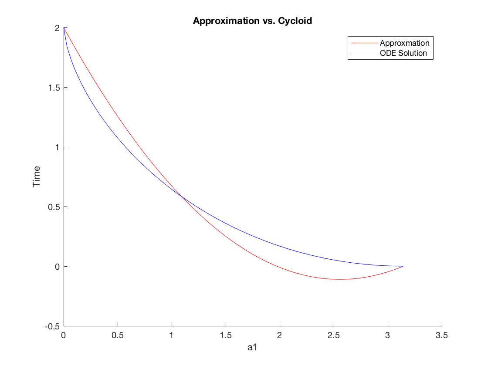

NOTE TO MARKER: See physical copy of assignment 8 for all written work for parts a) and b)
Contents
Seting up the ODE solver
warning('off','all') type particlemotion
function df = particlemotion(t,f) df = zeros(2,1); df(1) = f(2); % represents y(x) df(2) = (1+(f(2)).^2)/(4-2*f(1)); %represents y'(x)
PART A
We begin by creating the initial conditions for the bead. Note that we require a large negative starting slope
initialconditions=[1.999999,-1390]; x=[0,pi]; [x,sol]=ode45(@particlemotion,x,initialconditions); theta=linspace(0,pi); xcycloid=theta-sin(theta); ycycloid=1+cos(theta);
This is a graph of our solution to the ODE
Graph 1
figure('name','Solution to ODE','NumberTitle','on'); hold on; title('Trajectory of bead ODE') ylabel('y component (m)') xlabel('x component (m)') plot(x,sol(:,1),'r'); %particle 1 hold off;
This is a graph of the cycloid
Graph 2
figure('name','Cycloid','NumberTitle','on'); hold on; title('Trajectory of bead Cycloid') ylabel('y component (m)') xlabel('x component (m)') plot(xcycloid,ycycloid,'b') hold off;
Note that they are basically identical when we plot them over top of eachother.
Graph 3
figure('name','Solution and Cycloid','NumberTitle','on'); hold on; title('Trajectory of Bead Cycloid and ODE') ylabel('y component (m)') xlabel('x component (m)') plot(x,sol(:,1),'r'); %particle 1 plot(xcycloid,ycycloid,'b') hold off;
PART B
We define a2 as a function of a1 (we write a1 as 'a' in this code).
a2 = @(a) -((2+pi*a)/(pi^2)); f = @(a,x) ((1+(a+2*a2(a).*x).^2)./(-a.*x-a2(a).*x.^2)).^(0.5); a = -15:.1:10; g = 0*a; for k = 1:numel(a) fab = @(x) f(a(k),x); g(k) = quadgk(fab,0,pi); end
This graph plots the fall time as a function of a
Graph 4
figure('name','Value of Time for Various a1','NumberTitle','on'); hold on; title('Time taken for fall as a function of parameter a1') ylabel('Time') xlabel('a1') plot(a,g,'r'); hold off;
This seems to imply we want to make a as large as possible. From the graph below we show that if a>0 (for an example of a=1) then the particle begins by moving upward which can't happen if the bead is falling down.
x=linspace(0,pi); y=@(x) 2+(1)*x+a2(1).*x.^2;
Graph 5
figure('name','Value of Time for Various a1','NumberTitle','on'); hold on; title('x and y coordinates of particle') ylabel('y') xlabel('x'); plot(x,y(x),'r'); hold off;
It follows that a<0. We choose the value of a<0 that minimizes the motion. We thus examine the following graph time as a function of 'a' more closely.
a = -3:.01:-0.5; g = 0*a; for k = 1:numel(a) fab = @(x) f(a(k),x); g(k) = quadgk(fab,0,pi); end
%Graph 6 figure('name','Value of Time for Various a1','NumberTitle','on'); hold on; title('Time taken for fall as a function of parameter a1') ylabel('Time') xlabel('a1') plot(a,g,'r'); hold off;
This is minimum at approximately a=-1.65. Hence we choose this value. It follows that in the question we have a0=2, a1=-1.65 and a2=0.323
PART C
Observing graph 4 for negative values of a we estimate that the minimum fall time is 4.5686/(2g)^(1/2) which is approximately equal to 1.03 seconds.
PART D
Graph 7
figure('name','Value of Time for Various a1','NumberTitle','on'); hold on; title('Approximation vs. Cycloid') ylabel('Time') xlabel('a1') y=@(x) 2+(-1.65)*x+a2(-1.65).*x.^2; plot(x,y(x),'r'); [x,sol]=ode45(@particlemotion,x,initialconditions); plot(x,sol(:,1),'b'); legend('Approxmation','ODE Solution') hold off;
Clearly the two solution agree to a significnt amount, note that the approximate trajectory falls slower at first.